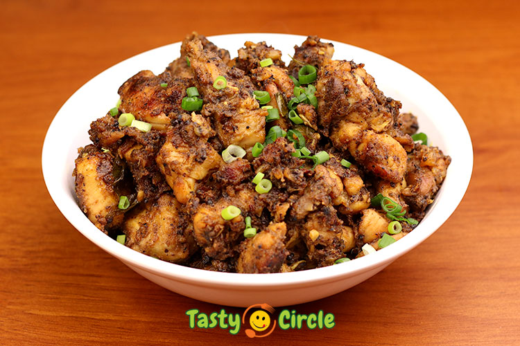

Pepper Chicken

Description
One of the Tasty and spicy Chicken dish.
Ingredients
- Chicken
- Onion & Tomatoes
- Cumin, Pepper & Coriander Powder
Steps
- In a large pan, heat the vegetable oil over medium heat. Add the chopped onion, garlic, and ginger. Sauté until the onion is translucent.
- Add the chopped tomatoes to the pan and cook until they have broken down and the mixture is saucy.
- Add the coarsely ground black peppercorns, cumin powder, coriander powder, turmeric, and salt to taste. Stir until the spices are fragrant.
- Add the chicken pieces to the pan and stir until they are coated in the spice mixture.
- Cover the pan and cook the chicken over medium-low heat for 15-20 minutes or until it is cooked through, stirring occasionally.
- Garnish the pepper chicken with chopped cilantro and serve hot with rice or naan bread.